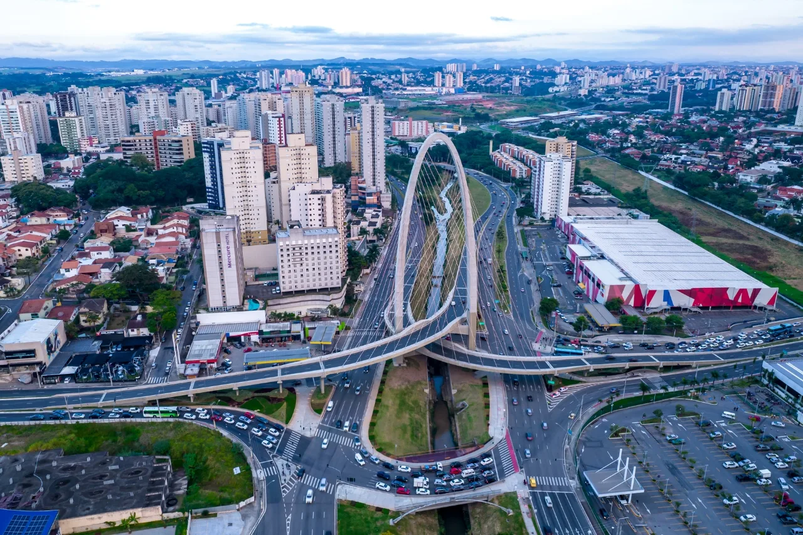

üí° As 10 cidades inteligentes do estado de São Paulo üèôÔ∏è
O estado de São Paulo é referência nacional em inovação urbana, com cidades que se destacam em mobilidade, urbanismo, meio ambiente, educação, saúde e economia. Confira abaixo as cidades que lideram o ranking Connected Smart Cities.

Santana de Parnaiba
Santana de Parnaíba é uma cidade histórica Metropolitana de São Paulo.
Saiba Mais

São Caetano do Sul
Uma das cidades bem posicionadas nos rankings de cidades inteligentes.
Saiba Mais
São José dos Campos
Essa cidade é pioneira em iniciativas de gestão pública e tecnologia.
Saiba Mais